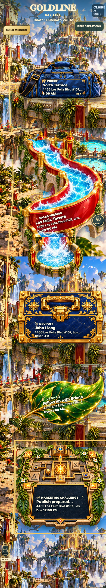
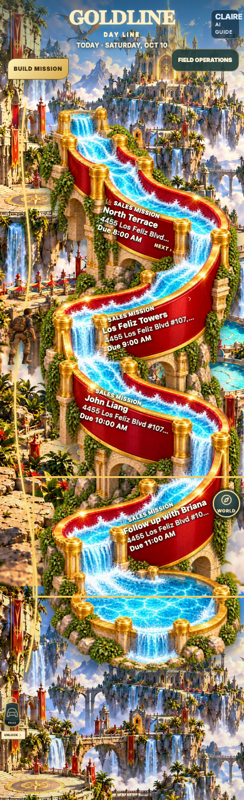

Approved v2 reference

Actual 390 × 844 mobile application · mixed day

Actual 390 × 844 · four sales

The reference supplies the fantasy world and five object identities. The implementation places live copy inside the duffel, overhead chest, leaf and stone mechanism. Consecutive sales use one connected waterslide with four independently actionable wall inscriptions. Missing metadata is omitted, and the full canonical address and title remain available when opening each object.

